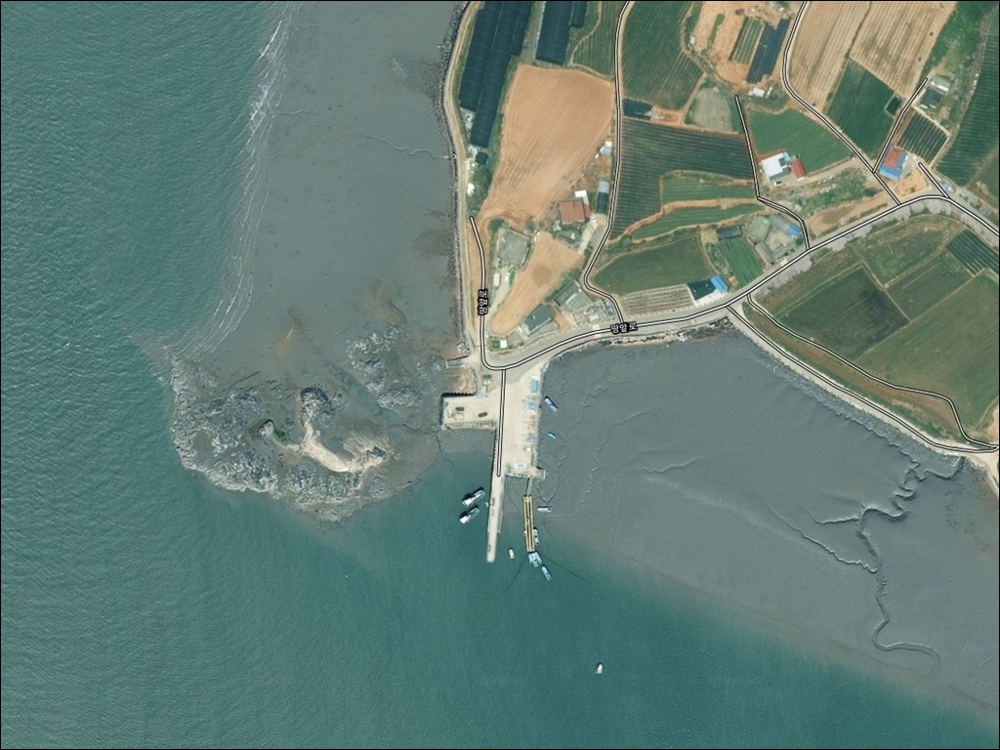
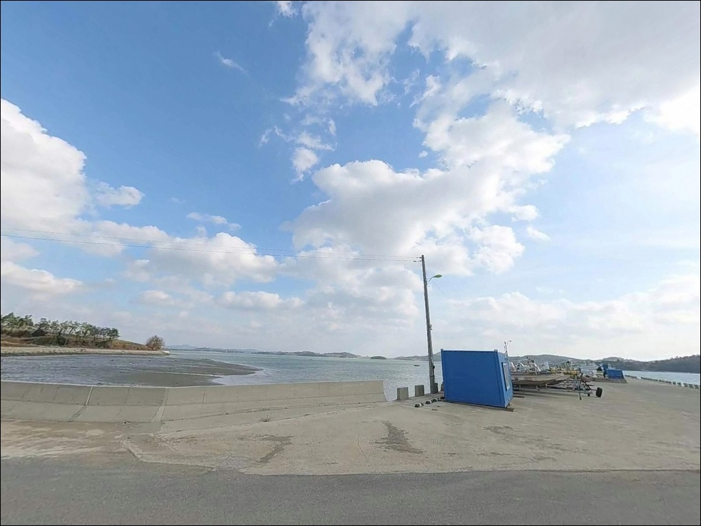
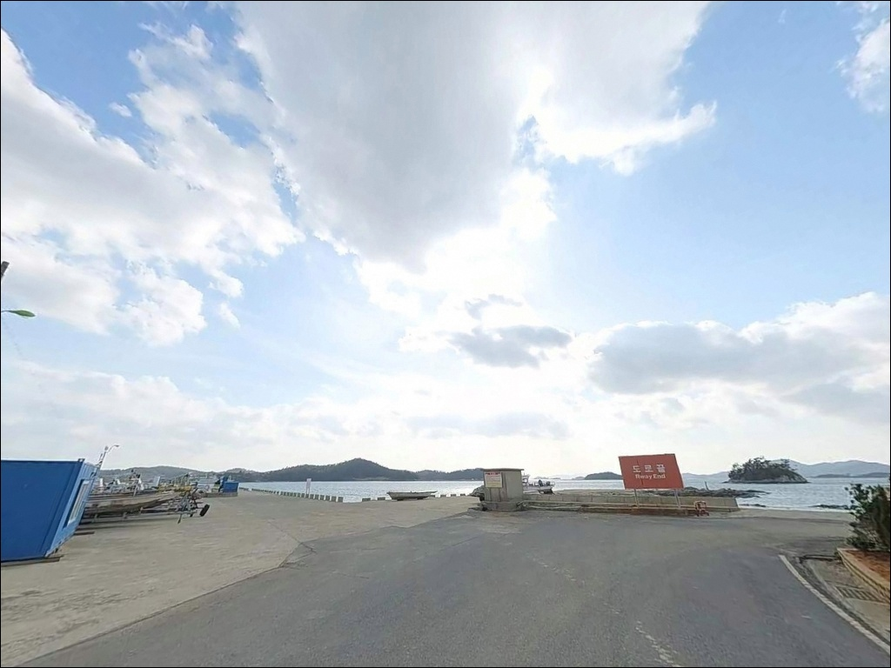
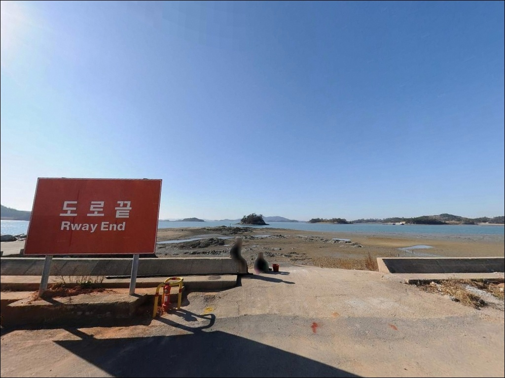
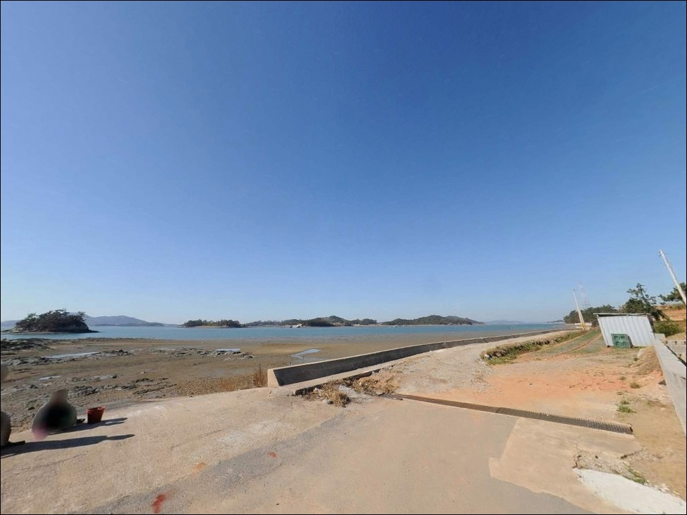
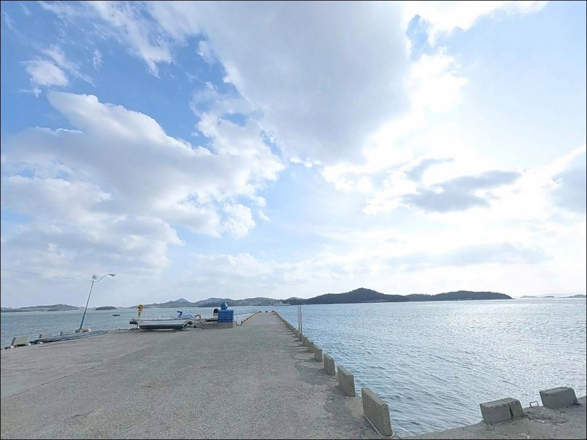
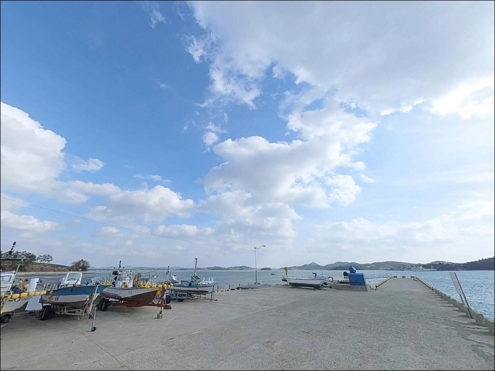
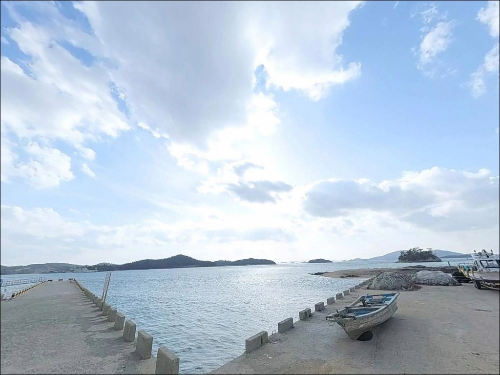
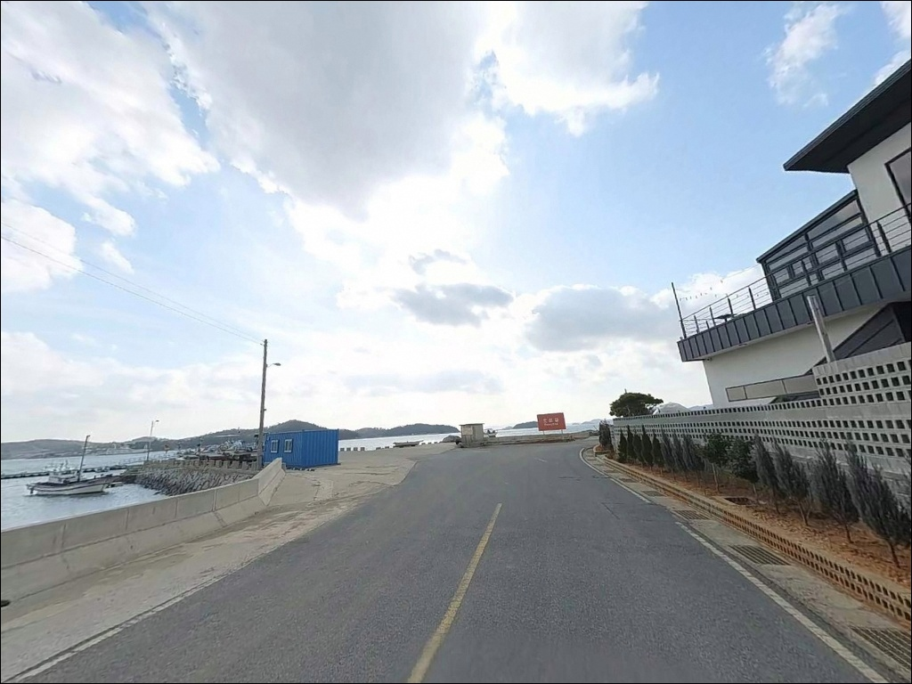

성내리 선착장, 전남 무안군 바다의 여운이 오래 남는 차박, 낚시 감성 포인트
이 페이지에는 광고(제휴 링크 포함)가 있으며, 광고 링크를 통해 구매하면 운영자가 판매 수익 또는 수수료를 받을 수 있습니다. 포인트 사진: 카카오맵 스카이뷰·로드뷰. 이 페이지의 지도·사진 이미지는 카카오맵의 실제 서비스 이미지와 다를 수 있습니다.


포인트 안내
성내리 선착장
전남 무안군 운남면 성내리 1047
성내리 선착장은 간조 시 갯벌이 완전히 드러나는 구조로,
물때 확인 없이 방문하면
낚시 자체가 불가능한 상황을 맞닥뜨립니다.
만조 기준 수심이 3m대까지 올라오더라도
조금만 물이 빠지면 채비가
바닥 갯벌 위에 얹히는 구조입니다.
도원선착장으로도 불리는 이 포인트는
김대중대교를 바라보는 내만 안쪽,
고이도·매화도 등 신안 섬들이 외해를 막아주는
잔잔한 해역에 자리합니다.
선착장 주변에 해상펜션과 낚시펜션이 있어
좌대 낚시를 연계하는
이용 패턴도 있는 곳입니다.
이 글은 성내리 선착장의
진입 여건, 물때 판단 기준,
어울리는 낚시 방식을 중심으로 정리합니다.
조황 단정이나 특정 어종 보장은
이 글의 범위에 포함되지 않습니다.

1. 위치 및 진입 동선 분석
무안군 운남면은 77번 국도가 관통하는
반도형 지역으로,
성내리는 그 남단 해안에 자리합니다.
선착장은 김대중대교를 바라보는
내만 쪽에 위치해 있어
외해 파도 영향이 거의 없는
잔잔한 해면이 특징입니다.
마을 내부 도로를 경유하는 구간이 포함되며,
승용차나 SUV 기준으로는
진입에 큰 불편이 없는 편입니다.
다만 대형 캠핑카나 장축 차량이라면
선착장 직전 구간에서 도로 폭이 좁아질 수 있어,
회차 공간 여부를 출발 전
위성지도로 미리 확인하는 편이 안전합니다.
주차는 도원선착장 인근 공용 주차 공간을
이용하는 것이 기본입니다.
만조 시 선착장 일부가 잠길 수 있어
주차 위치 선택 시 수위 변화를
함께 고려해야 합니다.
어선 조업 동선과 겹치지 않도록
자리를 잡는 것이 기본 매너입니다.

2. 차박 환경과 야간 체류 여건
성내리 선착장 일대는 민가 밀집도가 낮은 편으로
야간에는 비교적 조용한 분위기입니다.
도원선착장 기준으로 남녀 구분 화장실이 갖춰져 있어
차박 기점으로 활용하기 위한
기본 여건은 갖춰진 포인트입니다.
내만 구조상 바람 영향이 약하고
파도 소음이 거의 없어
수면 환경은 나쁘지 않습니다.
어촌 마을 선착장 특성상
가로등이 일부 구간에만 있는 편이라,
야간에는 개인 조명을 반드시
준비해야 합니다.
완전 고립형 포인트는 아닌 만큼
프라이버시를 최우선으로 삼는 차박 여행자보다는,
낚시를 메인으로 하고
차박을 보조적으로 활용하는 유형에
더 잘 맞는 환경입니다.
김대중대교 방향으로 지는 일몰이
야간 체류의 볼거리가 됩니다.


3. 주변 편의시설 및 인프라 현황
도원선착장에는 공용 주차장과
남녀 구분 화장실이 운영되고 있습니다.
인근에 해상펜션과 낚시펜션이 있어,
좌대 낚시를 원하는 경우
숙박과 연계한 이용도 가능합니다.
단, 운영 여부와 요금은
방문 전 개별 업체에 직접 확인해야 합니다.
반경 3km 이내에 편의점이나 마트를
기대하기는 어렵습니다.
출발 전 목포 시내 또는 무안읍에서
식수, 식재료, 낚시 소모품을
완전히 준비하고 진입하는 것이
현실적인 방식입니다.
반경 10km 권역으로 나가면
망운면 소재지 방향에서
주유소와 마트를 이용할 수 있습니다.
응급 상황에 대비해
가장 가까운 의료기관 위치도
출발 전 미리 파악해두는 것이 좋습니다.

4. 방문 전 반드시 챙겨야 할 준비사항
물때 확인 없는 방문은
진입로에 도착해도
낚시 자체가 불가능한 상황으로 이어집니다.
바다타임에서 고이도 또는 성내리 인근 기준
물때를 미리 확인하고,
중들물 시작 시각에 맞춰 진입하는 것이
기본 전략입니다.
만조 후 물이 빠지기 시작하는 속도를
미리 계산해두면 철수 타이밍을
놓치지 않을 수 있습니다.
첫 방문이라면 들물 타임에 맞춰 진입하고,
만조 이후 빠르게 철수하는 방식이
이 포인트 구조에 가장 안전한 운용법입니다.
양식장이나 그물이 있을 가능성이 있는 해역이라
캐스팅 방향은 현장에서 먼저 확인해야 합니다.
구명조끼는 선착장 낚시에서 필수이며,
어선 조업 차량과 선박 이동에
방해가 되지 않도록
주차 후 자리 선정을 신중하게
해야 합니다.

5. 만조 전후 2~3시간이 실질 낚시 타임인 이유
무안군 서해안은 조수간만의 차가 국내 최대 수준에 속하는 해역으로,
성내리 선착장은 그 영향을 직접 받는
갯벌형 내만 포인트입니다.
만조 기준 수심은 3m 후반 수준이지만,
간조가 되면 0.4m 수준까지 낮아지고
갯벌이 드러나는 구간이
넓어지는 구조입니다.
성내리 선착장은 간조 시 갯벌이 완전히 드러나는
서해 갯벌형 포인트로,
만조 전 중들물부터가
실질적인 낚시 가능 타임입니다.
선착장 끝단 주변으로 물길이 형성되는 구간이 있어,
이 구간을 중심으로 자리를 잡는 것이
기본 공략법입니다.
조류는 고이도·매화도 등 인근 섬들 사이
수로 영향을 받는 구조로,
물때에 따라 흐름의 세기가 달라집니다.
사리 전후에는 조류가 빨라져
봉돌 무게 조절이 필요하며,
조금 전후에는 흐름이 완화되어
채비 컨트롤이 쉬워지는 편입니다.
출조 전 성내리 선착장 또는 운남면 조황을
먼저 검색해보시기 바랍니다.


6. 포인트에 어울리는 낚시 스타일
이 포인트 지형 조건에 가장 잘 맞는 방식은
원투낚시입니다.
갯벌과 모래가 혼합된 바닥 구조에서
만조 타이밍을 맞춰
채비를 선착장 끝단 너머로 멀리 보내는 방식이 기본입니다.
감성돔, 붕장어, 숭어 등
바닥층 어종을 기대해 볼 수 있는
지형이며, 봄부터 가을까지
시즌 폭이 넓은 방식입니다.
찌낚시는 선착장 주변 근거리를 공략하는 방식으로,
수심이 유지되는 만조 타임에 집중합니다.
내만 방향 얕은 수심에서
짧게 타나를 설정하고 공략하는 것이
이 지형 구조와 맞으며,
초보자나 가족 단위 방문자에게도
어울리는 방식입니다.
루어낚시는 선착장 주변 구조물과
물길 경계를 따라 탐색하는 방식이 맞습니다.
수심이 충분히 확보되는 만조 전후 타임에 집중하며,
조류가 흐를 때 선착장 주변에서
농어 계열 어종을 기대해 볼 수 있는
조건이 형성됩니다.
에깅이나 갯바위 방식은
이 지형 조건과 맞지 않아
대상 방식에서 제외하는 편이 현실적입니다.

7. 대안 포인트와 플랜 B 동선
성내리 선착장의 물때가 맞지 않거나
조황이 여의치 않을 때,
같은 무안 서해권에서
가장 먼저 이동할 포인트는
구로리 방파제(무안군 청계면)입니다.
무안 서해 만 구조에서
감성돔 원투낚시 포인트로 가장 많이 언급되는 곳으로,
방파제 구조가 있어
채비 운용이 상대적으로 안정적입니다.
무안 톱머리 방파제(청계면 도대리)도
같은 권역에서 봄철 감성돔 낚시로
찾는 이들이 있는 포인트입니다.
방파제 끝단에서 원투와 찌낚시를 병행하는 방식이
이 포인트 구조에 맞으며,
방파제 주변 자갈밭과 갯벌이
혼합된 지형입니다.
김대중대교를 건너
신안 압해도 방향으로 이동하면
선착장과 방파제가 이어지는 권역이 나옵니다.
성내리보다 조류 영향을 더 직접적으로 받는
구조가 많아,
루어낚시나 감성돔 찌낚시를 원하는 경우
대안으로 살펴볼 만한 동선입니다.

물때 하나만 맞추면
성내리가 달라 보입니다
원투낚시나 찌낚시를 즐기는 낚시인이라면
성내리 선착장의 지형 조건은
나쁘지 않은 구조입니다.
수심이 깊지 않고 갯벌형 바닥이라
화려한 조과를 기대하기보다,
만조 타임을 맞춰 조용히 자리를 깔고
손맛을 보는 스타일의 낚시꾼에게
잘 맞는 포인트입니다.
반면 물때 계산 없이 방문하거나
간조 시간대에 도착하면
낚시 자체가 불가능한 상황을
맞닥뜨릴 수 있습니다.
물때 확인, 사전 물자 준비, 진입 전 조황 검색,
이 세 가지를 갖추고 간다면
기억에 남는 출조가 될 수 있는 곳입니다.
도원선착장 기준으로
주차와 화장실이 갖춰져 있어,
낚시 후 잔잔한 내만 앞에
조용히 하룻밤 머무는 차박을 곁들인다면
낚시와 차박 두 가지를
무리 없이 즐길 수 있는 포인트입니다.